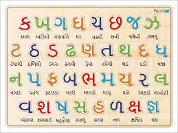
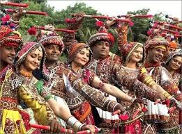
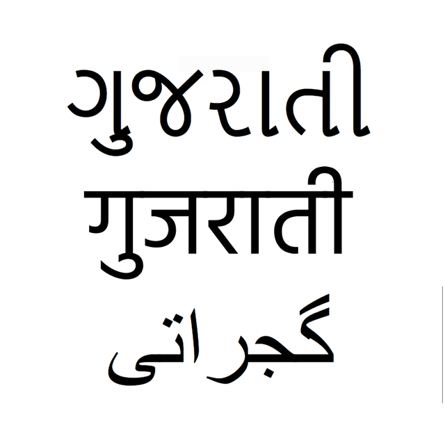
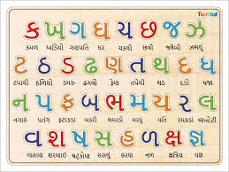
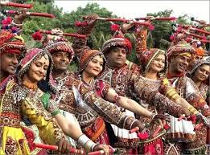
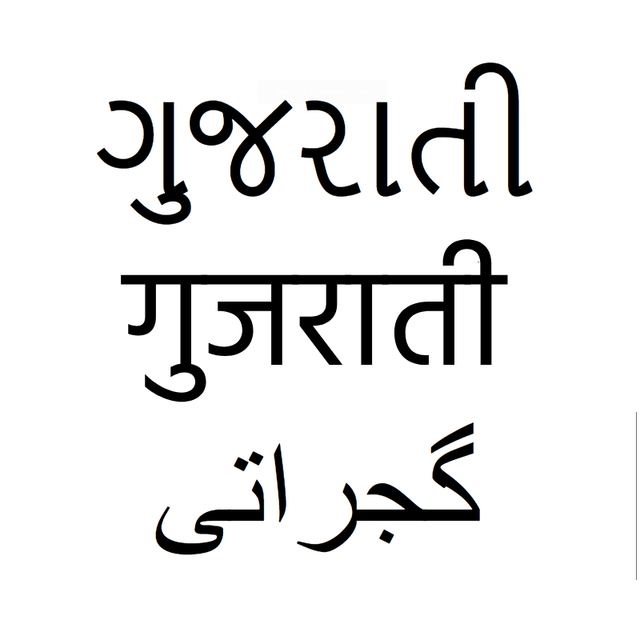

OLAC: Open Language Archives Community
OLAC: Open Language Archives Community
OLAC: Open Language Archives Community
OLAC: Open Language Archives Community
 





| Title: | Hindī-Gujarātī dhātukośa... |
|---|---|
| Creator: | Caudharī, Raghuvīra, 1938- |
| Date: | 1982 |
| Description: | A comparative study of Hindi-Gujarati verbal roots |
| Extent: | 230 p. ; 25 cm |
| Is Part Of: | L.D. series ; 87 |
| Language: | Gujarati Hindi |
| Language (ISO639): | guj hin |
| Publisher: | Ahamadābāda : Lālabhāī Dalapatabhāī... |
| Subject: | PK1934.C35 1982 Hindi language Gujarati language |
| Archive: | Graduate Institute of Applied Linguistics Library |
|---|---|
| Description: | link |
| OaiIdentifier: | oai:gial.edu:3865 |
|---|---|
| DateStamp: | 2009-05-27 |
| Citation: | Caudharī, Raghuvīra, 1938-. 1982. |
|---|---|
| Terms: | area_Asia country_IN dcmi_Text iso639_guj iso639_hin |
| Country: | India |
|---|---|
| Area: | Asia |